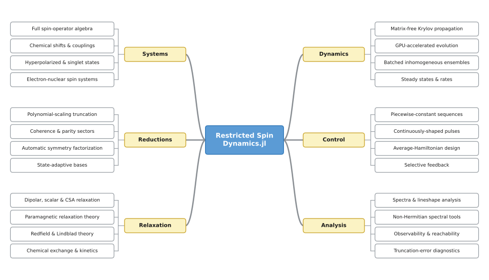

RestrictedSpinDynamics.jl

RestrictedSpinDynamics.jl simulates open-system NMR spin dynamics for systems far larger than a full Liouville-space treatment can reach, and it runs on an ordinary workstation. It handles coupled spin systems, pulse sequences, and relaxation.
The Getting Started guide installs the package and runs two worked simulations, a free induction decay and a pulse sequence. For a longer hands-on path, the scripts/tutorials/ directory has seven numbered, runnable walkthroughs.
It reaches that scale at polynomial cost in the number of spins. The density matrix ρ = Σ c_α P_α is expanded in a product-operator string basis (Pauli strings for spin-1/2, irreducible spherical tensors for higher spin) truncated by correlation order (grade), the Lindblad Liouvillian is assembled as a sparse superoperator, and it is propagated matrix-free. Relaxation is modeled separately, from an exact classical bath through eigenbasis Bloch-Redfield to Zeeman-secular rates, down to zero field.
API
The general pattern is composable named-term specification layers feeding a constructor and single-call verbs. The composers (hamiltonian, state / mixture, dissipator, sequence, modulation) build a plain PauliDict / TensorDict / coefficient vector from named physical terms; the constructor (restricted_basis) builds the basis, and the verbs (build_liouvillian, propagate, expect) are single calls that consume them.
See Public API & stability for the stability tiers and naming conventions.
Choosing a Method
Time evolution factors into three orthogonal choices that compose: the engine (how a generator is stepped), the basis reduction (which product-operator strings are kept), and the generator reduction (how the discarded complement is folded back in). A typical run stacks all three: a grade- and symmetry-reduced basis, stepped by propagate, with the discarded complement kept as a memory_kernel. Relaxation modeling is a fourth axis with its own collapse hierarchy (the Reduction Ladder).

Each axis composes with the others and with any engine:
- Engine (
propagateand its variants): how the generator is stepped. See Time Propagation. - Symmetry and sectors (
parity,weight,symmetryonrestricted_basis): exact coherence-order and site-permutation blocking, so only the sector your state occupies is built; a class ofnmagnetically equivalent spins collapses to a size independent ofn. See Symmetry Capabilities. - Adaptive basis (
reachable_basis): keep only the strings the dynamics (and, if you passobservables, the measurement) can populate. The kept set is closed under the generator, so it reproduces the full grade-kmaxresult exactly at a fraction of the size. See Reachability, Control, and the Adaptive Basis. - Reduced dynamics (
memory_kernel,tcl_generator,effective_liouvillian; automated bygrade_tiers): fold the discarded complement back into a smaller generator on the kept space. See Nakajima-Zwanzig Formalism. - Relaxation: choose a tier on the secularity ladder, from the exact classical bath down to the Zeeman-secular rates. See Relaxation Backends.
Submodules
RestrictedSpinDynamics.AHT: average-Hamiltonian pulse-sequence design (see Average Hamiltonian (AHT)).RestrictedSpinDynamics.Spectral: contour-integral spectral tools (exceptional points, Petermann factors) and non-normal transient-growth analysis (the Kreiss bracket, the measured envelope, and the optimal-growth initial state) that avoid the unreliable eigendecomposition of the non-normal restricted Liouvillian (see Spectral (Contour)).
Both submodules are Experimental; see Public API & stability.
Origin
It began life when I realized I was about to lose access to my Matlab and Mathematica licenses. Rather than make peace with Python, I decided this was the perfect excuse to stay in Julia; which, conveniently, already had a wonderful foundation for such a package. The earliest versions were used to check correspondence with the second-quantized calculations from the beautiful QuantumCumulants.jl by Plankensteiner et al.
The original challenge was simulating radiation damping in J-coupled, hyperpolarized liquid-state NMR systems. To tame the exponential growth of state size with nuclei count, several of the 'restricted state space' techniques of Kuprov et al. were major inspirations (see References).
Module Reference
RestrictedSpinDynamics — Module
RestrictedSpinDynamicsRestricted state space (RSS) simulation of NMR spin dynamics. The density matrix ρ = Σ_α c_α P_α is expanded in a Pauli-string basis truncated by grade (correlation order ≤ kmax); the Lindblad Liouvillian is assembled as a sparse superoperator and time-propagated matrix-free, reaching strongly coupled, many-spin systems infeasible in full 4^N Liouville space.
The product of two Pauli strings is one string times a phase, so 𝓛 is sparse and grade-kmax truncation is exact iff the dynamical Lie algebra closes at grade ≤ kmax (dla_dimension is that floor). The limit is the basis DIMENSION, not the spin count: a symplectic (x,z) UInt64 bit-tableau is the fast path for N ≤ 64, and past 64 spins a sparse grade-scaled label (RadixIndex arithmetic rank) carries the same engine, bounded only by max_dim (restricted_basis(N, kmax; max_dim=…), a BasisTooLargeError guard).
Symmetry reductions of the S_z-conserving 𝓛: an exact ~2× Pauli parity sector (restricted_basis(N,k; parity=…)), a ~3-8× definite-weight sector (weight=w, ladder representation), and a site-permutation symmetry (symmetry=…, 1D irreps) blocking by point group or magnetically-equivalent classes (one class ⇒ dimension C(kmax+3,3) regardless of N).
Start from restricted_basis, hamiltonian, build_liouvillian, and propagate; see the package README for the architecture map.